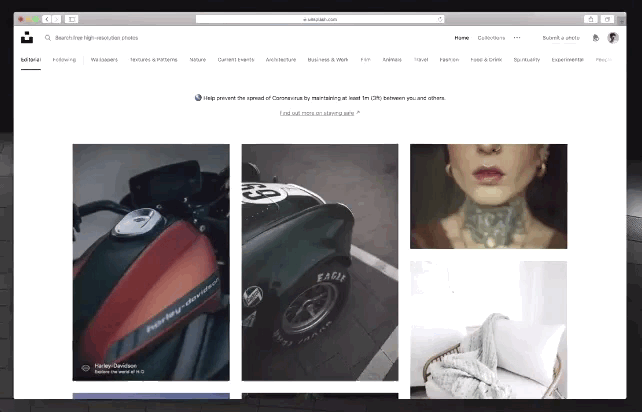
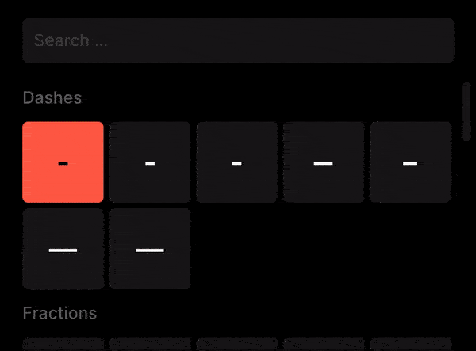
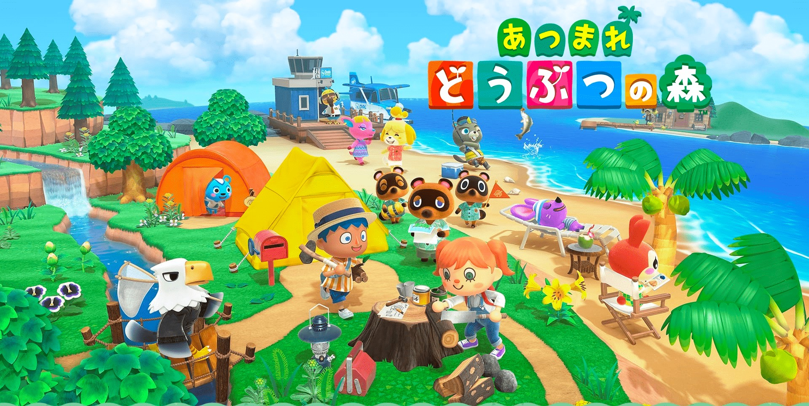
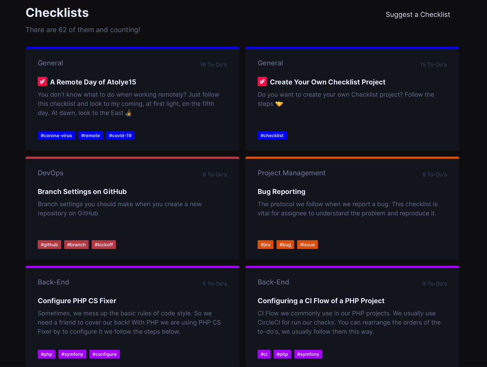

设计周刊 Design Weekly #03
Thu, Apr 16, 2020
🏷 设计亮点：
Unsplash这枚抗疫小心机，藏得挺低调
在免费资源图库 Unsplash 中，当你把鼠标轻轻移上图片界面时，图片纷纷各自弹开，保持合理距离，小伙伴可以体验一下这微小交互带来的惊喜~来源

🏷 设计资源：
字符搜索工具 Glyphfinder
Glyphfinder 能够帮你查找各种各样的字符、表情乃至于相似的色彩。

🏷 设计新闻：
GitHub 宣布向所有团队免费开放核心功能
GitHub 官方宣布，所有用户都可以免费使用该平台的核心功能。无论是个人免费账户、还是商业项目团队，都可访问 GitHub 的存储库、以及每月 2000 分钟的 GitHub Actions 访问。
🏷 设计文章
《动物森友会》是如何让千万人沉迷的？
蹭个热点，超火的 Switch 平台游戏《集合啦！动物森友会》令人炫目的销售成绩背后，有着怎样令人沉迷的魔力？让我们通过这篇文章来来了解一下这款游戏背后的成功秘诀吧~

🏷 设计工具
Checklists，这里包含你所需要的角色和对应的流程
这个网站包含了针对设计和开发者的清单，其中包含你所需要的角色和对应的流程分别是什么，希望可以帮到你~
